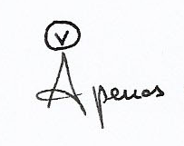
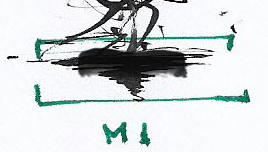
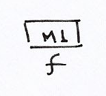
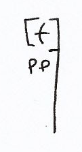

Composición: Adolfo C. De Boeck
Adolfo C. De Boeck-2021
Especificaciones generales:
• Las páginas deben leerse de arriba hacia abajo coordinando el gráfico espectral con la pista de audio.
• Gráfico espectral: sirve para coordinar el texto, el sonido y las memorias. No busca representar de forma precisa la espectromorfología del sonido en la pista.
• La lectura debe realizarse internamente (no en voz alta).
• El signo "v" dentro de un círculo representa la articulación simultánea de una consonante o vocal y un evento específico del gráfico espectral.
• Memorias: son fragmentos de audio en corchetes verdes que deben guardarse en la memoria y posteriormente reproducirse internamente. Las memorias se denominan según su orden de aparición: M1, M2, etc. y se articulan cuando su nombre aparece en un rectángulo negro.
Memoria 1.
Reproducción de memoria 1.
• Las intensidades relativas se aplican únicamente al texto, vocales/consonantes en corchetes y memorias.
• Las líneas verticales indican la duración relativa de un evento:
• La poesía no está pensada como texto independiente, sin embargo, se transcribe a continuación para facilitar la lectura del manuscrito. No se considera la distribución espacial en la página ni las consonantes entre corchetes.
Todavía
¿están ahí?
Apenas spora el aleteo:
Un parpadear
Otra cosa
Algo que se pretende un cielo
pero
que
cae
y rueda
sobre un azúl
endurecido
por el frío
Llueve
una chispa sobre un fondo vacío
blanco.
Después:
un golpe que se parece a la nada
¿Qué dice la lluvia ante la última gota?
Cae, sí;
como una mueca cansada
Cae, sí; en algún lugar y en algún momento.
¿Sabrán detener la inercia con las manos desnudas?
Apenas:
un grito del chajá
un canto del viento
una mueca
abierta
en la ausencia
que grita, que corre, que salta
¿Qué habrá cuando no haya canto?
Lenta
Figura
Sube
Alza
Aparta
Algo
de sí.
Va,
cae,
resuelve
la intimidad
Un aire
caliente
que late
Como la inquietud de
algún otro animal
Sale,
se va
Se pierde en
el reflejo debilitado del día
que ciñe el rostro
y el gesto
que sigue:
como un listado
de ver y decir
Un astuto mal entendido
Pareciera un decir anónimo
ante la vista del sol
un pensar que vaga en la ceniza
¿Dónde van los héroes cuando no hay guerras?
Desde el Oeste apenas un redoble,
un sentir forzado por el empuje.
Fiebre desencantada que se tuerce
ante el viento,
ante la mística sincronía que
también tuerce el paso
como si fuera
el cauce de un río
el comienzo de un recuerdo
un origen,
un mal en todas las cosas.
Entonces:
Mirar atrás para enfrentar otras cosas,
a uno mismo
Mirar atrás y agarra los pecados
con las manos desnudas
con la garganta arenosa
en el parco vuelo de
la última voz del día.
Un ayer que busca, como un hijo,
ser reconocido.
Una impronta arqueada
por el tiempo
y
en aquella valentía
no hay medalla alguna
ni el repique de las palmas
ni su voz entrecortada
abriendo el día:
Sólo el latido de un impulso enfermo,
que mira sin ver
y se vuelve sobre un mundo encerrado
en una caja de cristal
El viento, entonces, será viento
cuando ya no queden historias que contar:
será la única cara del desierto
los mil nudos en la montaña
una ligera esperanza que se asoma
buscando reconocer:
un origen,
un mendigo
un final
un origen un mendigo un final
único hilo que nos separa
y condena a mirar
nuestras mil caras del ayer
¿Cómo?
¿Cómo volver al centro del negro?
Una tarde de preguntas agotadas
y brazos que no caen
es tan difícil no sentir la estafa
Continúa el rito ausente en el diálogo
Principio de la ausencia
que da un nombre
Si pudiera volver a empezar...
diría que no.
Se levanta
busca en otros ojos
se recupera
del terror de la
palabra
eso:
Anidado en el
centro
del pecho
en plena espera
Eso:
palabra
dosificada
como el remedio
de la fe
¿Cuántos rostros alza la brisa?
Y ese trayecto de ida
va, viene
Sana constumbre de mirar al cenit y ver
como siempre
un punto grande y cegador
Ritmo puro en el salvaje orden libre
una estela sin comienzo sin final
un pendular de estrella
¿Qué más que la mueca rígida en invierno?
Más todavía
la nitidez del sol en verano?
Un pequeño latir afiebrado
se aferra a una verdad
¿Cuánta verdad?
Un manicomio de pájaros y flores
¿Cuándo dejamos de huir?
Solía decir ella en algún momento
de aquí a un tiempo
Plantarse frente al vértido imposible
de la rueda
en pleno giro
en la plenitud
del círculo
que no llega a ningún lado.
Quisiera ser algo de aquel niño que
enterró sus rodillas
en la arena hundida
Doliera volver atrás y finalmente no ver
nada.
Buscar un fantasma fiel
como la sombra
del cuerpo,
que embrutece la tierra
y así: doliera dispersar el puño cerrado en mil preguntas
llenar la oscuridad que cubre el avance
Casi...
como el caer
desenfrenado
de una hoja
en pleno goce
del viento
¿y después?
¿un suelo?
Esta obra está bajo una Licencia Creative Commons Atribución-NoComercial-CompartirIgual4.0 Internacional Código: 2110199563656.
Contacto: adolfodeboeck@gmail.com